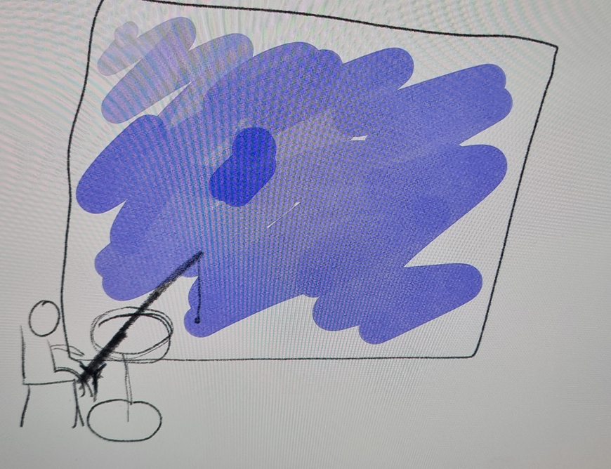
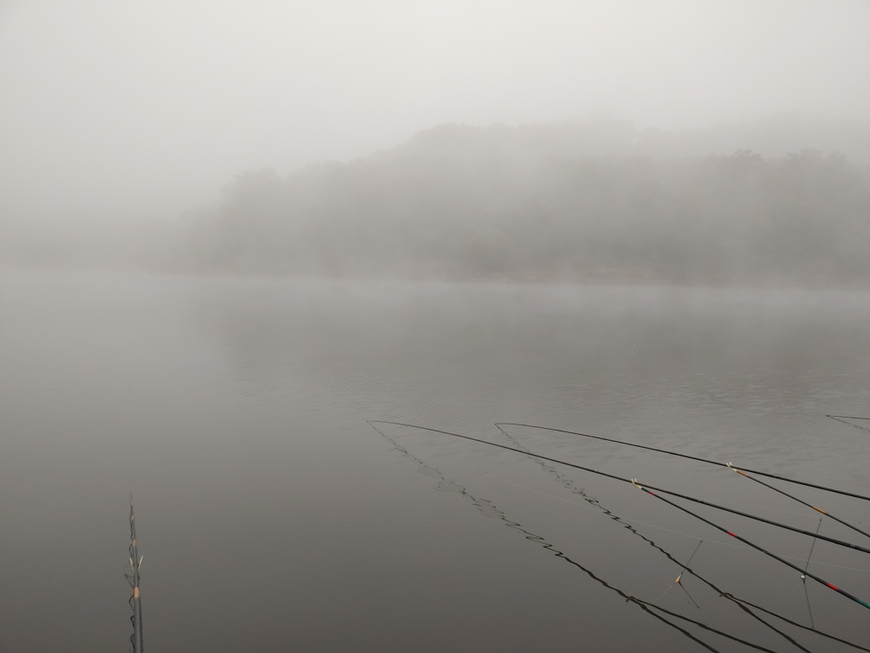

카페 테이블은 따로 있습니다. 피시방의 느낌이라 해야하나...음료수는 캔으로 팝니다. 말만 카페지 왜 카페인지는 몰?루
tecaa
2022-02-25 오후 07:45:52

요런느낌인줄.....
야칠101
(글쓴이)
2022-02-25 오후 07:51:45
오 느낌 완전 비슷합니다.
거기서 테이블만 빼시면 될듯?
방구석게임중독
2022-02-25 오후 06:36:05
와 나 이거 유튜브에서 보고 실내낚시터 가보고싶었는데
야칠101
(글쓴이)
2022-02-25 오후 06:46:15
트라이 ㄱㄱ? 물고기 잡기 쉽습니다. ㄹㅇ루
방구석게임중독
2022-02-25 오후 06:48:10
무슨 느낌일지 알아서 너무 좋습니다... 비린내에, 좁은 공간에 물로 가득차서 찰박 소리 들리고, 말소리는 벽을 타고 되돌아와서 울리고 습기 때문에 답답하고 사람들은 많고 누가 물고기 잡으면 다같이 박수치고... 히키라 그런지 유튜브에서 실내낚시터 영상 보고 완전 반했었는데 물론 내 시골 지역에는 이런 곳 하나도 없습니다. ㅋ
야칠101
(글쓴이)
2022-02-25 오후 07:45:27
실내/외 낚시터들이 항상 조용한 분위기라 좋긴 합니다.
시간만 많으면 그런 낚시터만 가는건데 말이죠.
특히 야간에 소쩍새 소리 들으면서 조용히 찌 바라보는 느낌 크으으으으ㅡㅡㅡ
저수지형 낚시터 가서 방갈로 잡고 낚시하면 분위기 진짜 엄청 좋습니다. 못잡아도 좋은 그런 느낌 ㄹㅇ
언젠가는 꼭 도전해보시길 바랍니다.
야칠101
(글쓴이)
2022-02-25 오후 07:50:00

아침에 일어나서 따뜻한 커피 한잔에 물안개 낀 풍경 바라보면 행복합니다 진짜루
shm0888
2022-02-25 오후 07:01:35
와.. 재밌겠다. 전 낚시카페 한번도 못 가봤습니다. 혹시 저기서 잡으면 바로 먹을 수 있는건가요?

후원댓글 14개
댓글 14개 ▼